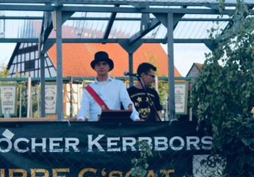
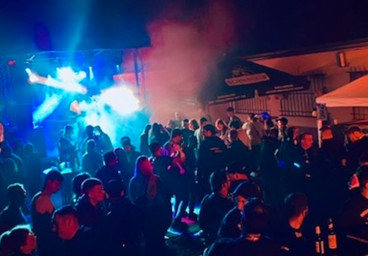
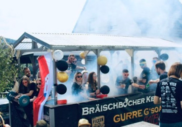
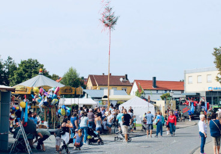
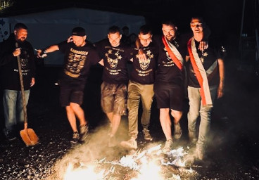
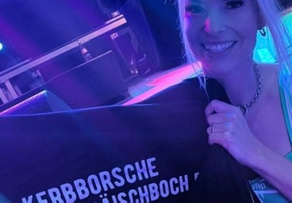
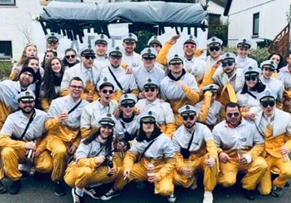
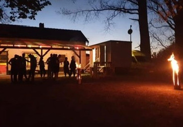

Seit 2007 in Brensbach
Gurre g'soat zur Bräischbocher Kerb.
Kerbtraditionen, Events, Jugendförderung und mehr — für unser Dorf.
Kerbtraditionen, Events, Jugendförderung und mehr — für unser Dorf.
Jedes Jahr am ersten Montag im September und dem vorausgehenden Wochenende.





29. August – 2. September 2025. Feiert mit uns die Bräischbocher Kerb!
Zur Veranstaltung →Wir sind mehr als ein Kerbverein. Erfahrt, was uns noch bewegt.

Feste, Partys, Public Viewings und mehr — wir bringen das Dorf zusammen.
Mehr erfahren →
Wir fördern den Nachwuchs und geben jungen Menschen eine Plattform.
Mehr erfahren →
Gemeinsam anpacken — für Brensbach und unsere Gemeinschaft.
Mehr erfahren →